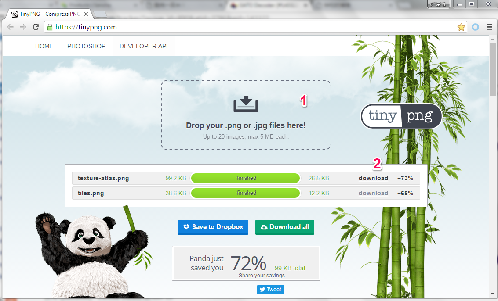
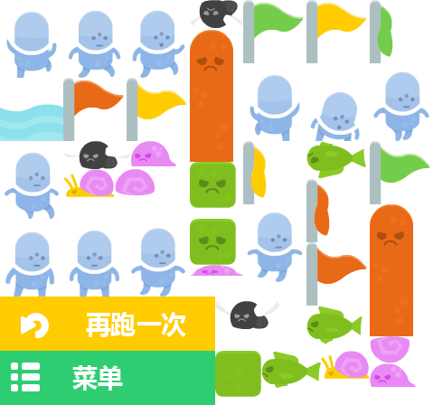

游戏里面肯定会有很多的图片，图片的大小会对游戏的性能产生影响。所以，在不影响美术效果的情况下尽量要用分辨率低的图片。
今天发现了一个挺好的网页工具tinypng，可以把PNG图片在“不太”影响图片效果的情况下压缩图片。
工具的使用方法很简单：点击这里访问网站，然后如下图步骤就可以了。
- 把要处理的PNG文件（支持一次处理多个文件）用鼠标拽到这里。
- 处理成功后点击
download把生成的新PNG文件下载下来就好了

从上图可以看出，我上传的两个PNG文件一个大小减少了73%，另一个减少了68%，相当棒，对吧？
我们再看看图片texture-atlas.png转换前后的美术效果对比。
转换前：
转换后：

直接看基本分辨不出来，可是大小可变小了很多。真是一个很handy的好工具！